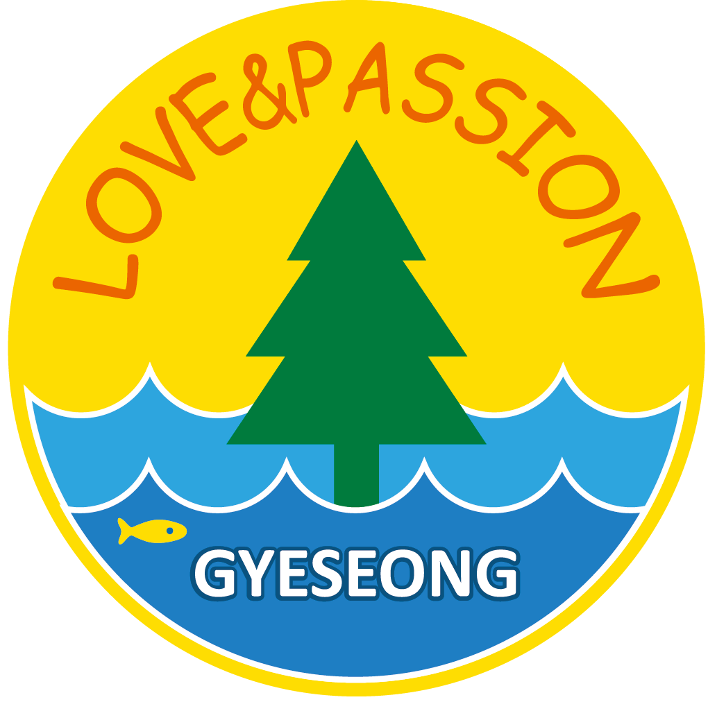

기본기부터 탄탄하게
태권도의 기본 동작과 예절을 익힙니다.

열정의계성태권도TAEKWONDO · NAMSAN-DONG상담 문의053-253-6658대구 중구 남산동 · 열정의계성태권도
태권도와 줄넘기, 함께 땀 흘리는 즐거움.
아이 한 명 한 명의 성장 속도에 맞춰 지도합니다.
매일의 수련이 만드는 작은 변화
열정의계성태권도는 대구 중구 남산동에서 유아부터 성인까지 함께 수련하는 태권도장입니다. 기본기를 차근차근 익히고, 서로를 존중하며, 스스로 해낸 경험을 쌓아갑니다.
오늘의 한 걸음이 자신감으로 이어지도록 따뜻하고 꾸준하게 지도하겠습니다.
도장 소식 더 보기 ↗태권도의 기본 동작과 예절을 익힙니다.
친구들과 움직이며 협동과 배려를 배웁니다.
각자의 속도에 맞춰 작은 성취를 응원합니다.
MOVE · LEARN · GROW
태권도 수련과 줄넘기를 통해 기초 체력과 집중력을 기르고, 도전하는 즐거움을 경험합니다.
기본 동작부터 품새와 겨루기까지, 몸에 맞는 단계별 수련을 이어갑니다.
리듬에 맞춰 뛰고 움직이며 체력과 민첩성을 기릅니다.
인사와 약속, 서로를 배려하는 마음을 매일의 수련 속에서 배웁니다.
OUR DAYS, IN MOTION
사진은 도장 소식에서 더 많이 만나보세요.
함께 나누는 태권도의 가치
태권도를 통해 사랑과 섬김을 실천하는 어린이 선교단 활동도 함께합니다. 수련을 넘어 이웃과 마음을 나누는 이야기를 만들어갑니다.
첫 수련을 응원합니다
수련 상담과 체험 문의를 환영합니다.
전화 또는 도장 블로그로 연락 주세요.